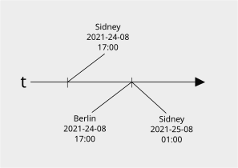

Some data might contain date or time information
data class CustomerAccount(
val birthday: ...
val creationTime: ...
val billingPeriodEnd: ...
)Lots of types to choose from
| Java | PostgreSQL |
|---|---|
| java.util.Date | timestamp [without time zone] |
| java.time.LocalDate | timestamp with time zone |
| java.time.LocalTime | date |
| java.time.LocalDateTime | time [without time zone] |
| java.time.OffsetDateTime | time with time zone |
| java.time.ZonedDateTime | |
| java.time.Instant |

java.util.Date
is effectively deprecated even though many frameworks
still support it.
It should be replaced by java.time.Instant
where possible.
If you want to know what one of these Java class does, look at the state it holds.
LocalDate::class.java
.declaredFields
.filter {
!Modifier.isStatic(it.modifiers)
}
.forEach {
println("\t${it.name}: ${it.type.name}")
}
If you want to know what one of these Java class does, look at the state it holds.
java.time.LocalDate:
year: int
month: short
day: short
java.time.Instant:
seconds: long
nanos: int
Clearly defined point in time. "Machine time".
java.util.Date (do not use)java.time.InstantTime described by someone. Ambiguous without context. "Human time".
java.time.LocalDatejava.time.LocalTimejava.time.LocalDateTimeContext gives a clearly defined point in time. "Human time with context".
java.time.OffsetDateTimejava.time.ZonedDateTimeIsn't it better to use Instant instead of OffsetDateTime
since they both represent an exact moment in time.
Human time
datetime [without time zone]time with time zoneHuman time with context
timestamp [without time zone]timestamp with time zonePostgreSQL will not persist offset or timezone using timestamp field.
CREATE TABLE testy (created timestamp with time zone);
INSERT INTO testy VALUES ('2021-01-01 12:00:00+05');
SELECT created FROM testy;
> 2021-01-01 08:00:00+01 -- depends on server time zone
When recording an exact point in time
(e.g. as it happens) use:
java.time.Instanttime [without time zone]When storing a particular day
(e.g. birthday, historic event) use:
java.time.LocalDatedate